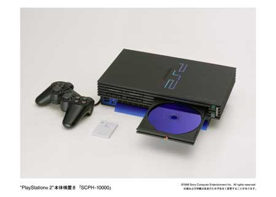
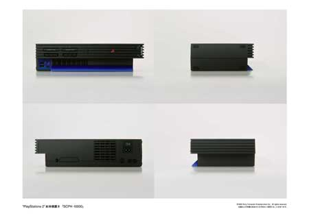
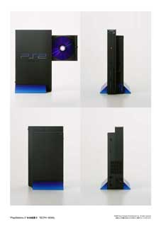
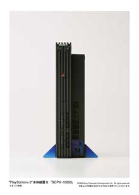
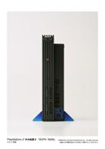
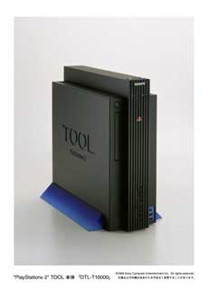

Aquí esta el diseño definitivo de la Playstation 2 en todas sus posiciones y grandarias. La verdad es que su aspecto no es su mayor virtud, y es que... ¿alguien ha podido evitar compararla con un radiador?. Despues de todo, lo que se dice es que la belleza se encuentra en el interior...





